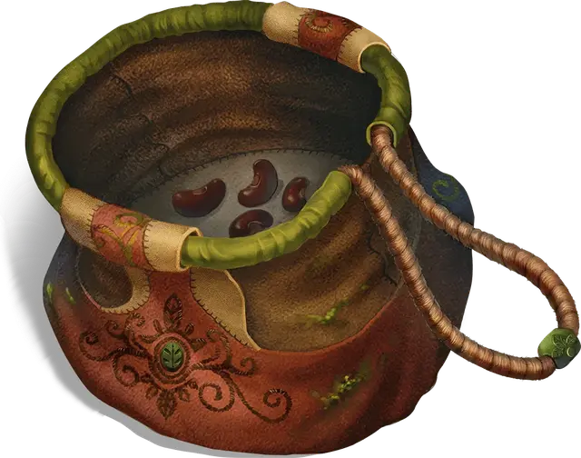

Сумка с бобами
Bag of Beans
Чудесный предмет, редкий

Рекомендованная стоимость 4 000 ЗМ
Когда этот мешочек из грубой ткани находят, в нём содержится 3к4 сухих бобов. Сумка весит полфунта независимо от количества содержащихся в ней бобов и становится немагическим предметом, когда в ней больше не остаётся бобов.
Если высыпать один или несколько бобов из мешка, они взрываются 10-футовой Сферой с центром на бобах. Все высыпанные бобы уничтожаются во взрыве, и каждое существо в Сфере, включая вас, совершает спасбросок Ловкости Сл 15, получая 5к4 урона Силовым уроном при провале или половину этого урона при успехе.
Если вы извлечете боб из мешка, посадите его в землю или песок и польёте, боб исчезнет, а через минуту из земли, где он был посажен, проявится эффект. Мастер может определить эффект броском по следующей таблицы или выбрать его самостоятельно:
| 1к100 | Эффект |
| 01 | Из земли вырастает 5к4 грибов. Если существо съест такой гриб, бросьте любую кость. Если выпало нечётное число, едок должен преуспеть в спасброске Телосложения Сл 15, иначе получит 5к6 урона Ядом и состояние Отравленный на 1 час. Если выпало чётное число, едок получает 5к6 Временных хитов на 1 час. |
| 02–10 | Из земли извергается гейзер, выбрасывая воду, пиво, майонез, чай, уксус, вино или масло (на выбор Мастера) на высоту 30 футов в течение 1к4 минут. |
| 11–20 | Вырастает Трент. Бросьте любую кость. Если выпало нечётное число, трент Хаотичный Злой, иначе трент Хаотичный Добрый. |
| 21–30 | Появляется оживлённая, но не ходящая каменная статуя, изображающая вас, и начинает словесно угрожать вам. Если вы оставите её, а к ней подойдут другие существа, она станет описывать вас как гнуснейшего злодея и направит новоприбывших отыскать вас и напасть. Если вы находитесь на том же плане существования, что и статуя, она знает, где вы находитесь. Оживлённость статуи оканчивается через 24 часа. |
| 31–40 | Вырывается костер, горящий зелёным пламенем 24 часа или до тех пор, пока не будет потушен. |
| 41–50 | Вырастают три Гриба-визгуна. |
| 51–60 | 1к4 + 4 ярко-розовых жаб выползают наружу. Каждый раз, когда к жабе прикасаются, она превращается в монстра Большого размера или меньше (по выбору Мастера), который действует в соответствии со своими Мировоззрением и природой. Монстр существует 1 минуту, а затем исчезает в облаке ярко-розового дыма. |
| 61–70 | Вылезает голодная Панцирница и атакует. |
| 71–80 | Вырастает фруктовое дерево с 1к10 + 20 плодов, 1к8 из которых действует как случайно определённые зелья. Дерево исчезает через 1 час, но собранные плоды остаются; если в плоде есть магия, она сохраняется в течение 30 дней. |
| 81–90 | Вырастает гнездо с 1к4 + 3 радужных яиц. Существо, съевшее яйцо, совершает спасбросок Телосложения Сл 20: при успехе существо навсегда увеличивает самое низкое из значений его характеристик на 1, выбирая случайным образом среди одинаково низких показателей; при провале спасброска существо получает 10к6 Силового урона от внутреннего взрыва. |
| 91–95 | Вверх вырывается пирамида с квадратным основанием размером 60 х 60 футов. Внутри находится погребальная камера, в которой лежит Мумия, Мумия-владыка или другая Нежить по выбору Мастера. Саркофаг этой Нежити содержит сокровище по выбору Мастера. |
| 96–00 | Вырастает гигантский бобовый стебель, вырастающий до выбранной Мастером высоты. Вершина ведет туда, куда выбирает Мастер, — например, к великолепному виду, замку Облачного великана или другому плану существования. |